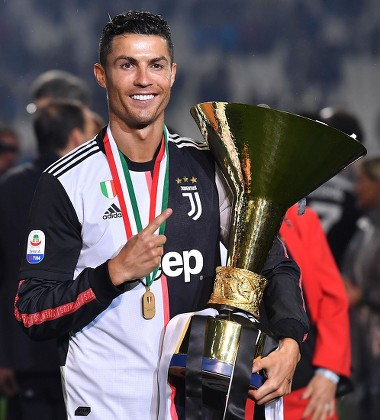

Career of Cristiano Ronaldo
Clubs
Sporting
Cristiano Ronaldo began his career at Sporting Lisbon, where he excelled and earned a golden opportunity, being bought by Manchester United for €15 million in 2003. A very cheap price when compared to the Portuguese player's excellent football skills.

Man UTD
Even at Manchester United, alongside several stars of the time like Ryan Giggs and Paul Scoles, the Portuguese player managed to stand out, and then his peak began, winning his first Champions League and his first Ballon d'Or. In 2009, for 94 million euros, Ronaldo transferred to the biggest team in the world, Real Madrid.

Real M.
At the Spanish club, Cristiano experienced his greatest peak, playing extraordinary football, winning the Ballon d'Or four times and the Champions League four times, in addition to achieving incredible milestones. There, he cemented his place in history as one of the greatest players of all time. And in 2018, he was bought by Juventus for 117 million euros.

Juventus
In Italy, many say that Cristiano didn't have a good spell there, which is a lie considering the good football he displayed and his achievements, including two Italian league titles. In 2021, he transferred back to Manchester United for 15 million euros.

Man UTD
Back in Manchester, even with United's limited squad, Ronaldo managed to stand out and carry his team to the Champions League knockout stages, but they couldn't win the title. In 2022, he was bought by Al Nassr for 16 million euros.

Al Nassr
Cristiano Ronaldo, despite his age, continues to excel at the club today, frequently being the team's top scorer in competitions. And at 41, he remains highly competitive.

National Team
Cristiano Ronaldo has been an undisputed starter for Portugal for years, being the team's top scorer and assist provider, and now in 2026, at 41 years old, he will try to lead the team to his first World Cup.